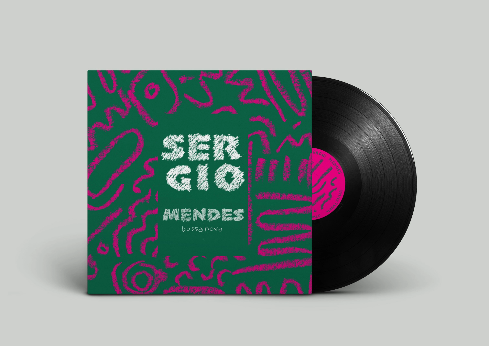
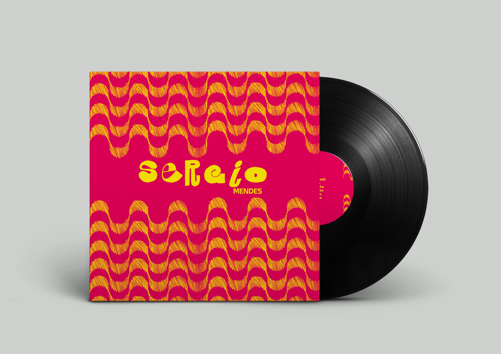

La bossa nova
Vinyles Sergio Mendes



Imagination et conception de 3 pochettes vinyles pour l’artiste Sergio Mendes, figure emblématique brésilienne de la Bossa Nova. Ici, couleurs festives, ambiance latino et relief typique de copacabana sont les maîtres mots.